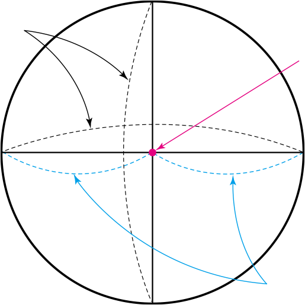

원과 원이 아닌 도형을 비교해 봅시다.
원을 완전히 포개지도록 반으로 접어서 생기는 선분을 원의
지름
이라고 합니다.
두 지름이 만나는 점 ㅇ을
원의 중심
이라고 합니다.
원의 중심 ㅇ에서 원 위의 한 점까지의 길이는 모두 같습니다.

원의
지름
원의 중심
원의 반
지름
ㄱ
ㄴ
ㅇ
나머지가 없으면 나머지가 0이라고 말할 수 있습니다.
나머지가 0일 때,
나누어떨어진다
고 합니다.